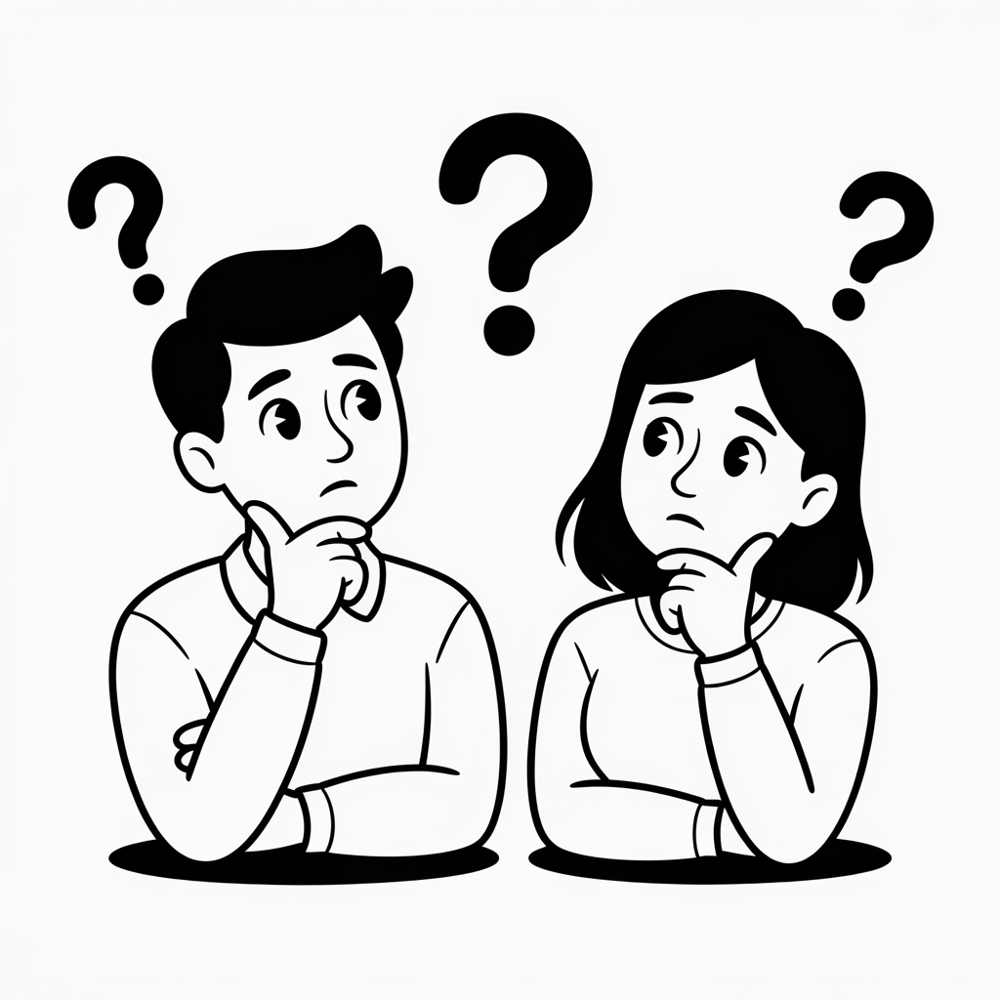

DUACyD
División de Universidad Abierta, Continua y a Distancia
La División de Universidad Abierta, Continua y a Distancia (DUACyD) es la instancia
encargada de coordinar programas educativos flexibles, incluyentes y de alta calidad
en modalidades distintas a la escolarizada.
La DUACyD integra tres grandes áreas de atención: el Sistema Universidad Abierta y
Educación a Distancia (SUAyED), la Jefatura de Educación Continua (EDCO) y el Centro
de Lenguas Extranjeras (CLe).
La DUACyD se encuentra en las instalaciones de la Facultad de Estudios Superiores
Aragón, ubicada en Av. Universidad Nacional S/N, Bosques de Aragón,
Nezahualcóyotl, Estado de México.
Puedes comunicarte con nosotros a través del correo
duacyd@aragon.unam.mx, por teléfono al
55 5623 0000, o acudir directamente a nuestras oficinas en la
FES Aragón en horario de lunes a viernes de 9:00 a 17:00 hrs.
SUAyED
Sistema Universidad Abierta y Educación a Distancia
Es una modalidad educativa de la UNAM que permite estudiar una licenciatura con
horarios flexibles, a través de materiales didácticos y el acompañamiento de
asesores, ya sea en modalidad abierta o a distancia.
La FES Aragón ofrece diversas licenciaturas en modalidad abierta y a distancia.
Te recomendamos consultar la sección SUAyED de este portal o comunicarte
directamente con la jefatura para conocer la oferta académica vigente.
En la modalidad abierta, el estudiante asiste de forma presencial
a asesorías en la institución. En la modalidad a distancia, toda
la interacción con asesores y entrega de actividades se realiza a través de
plataformas digitales, lo que permite estudiar desde cualquier lugar.
Los periodos de inscripción se publican en la convocatoria oficial de la UNAM.
Te recomendamos estar atento a nuestra sección de calendario y a nuestras redes
sociales para recibir avisos oportunos.
El asesor es la figura de acompañamiento académico del estudiante. Orienta el
proceso de aprendizaje, resuelve dudas, evalúa las actividades y fomenta el
estudio independiente, siendo un apoyo fundamental durante toda la trayectoria
escolar.
EDCO
Jefatura de Educación Continua
Ofrecemos cursos, talleres, microcursos y diplomados en diversas áreas del
conocimiento, enfocados en la actualización profesional y el desarrollo de nuevas
habilidades.
Los programas de Educación Continua están dirigidos a profesionales, egresados y
público en general que buscan actualizar sus conocimientos, adquirir nuevas
competencias o desarrollarse en áreas específicas sin necesidad de inscribirse a
un programa de licenciatura o posgrado.
Cada convocatoria incluye una liga de registro. También puedes consultar nuestra
página oficial o redes sociales para conocer los periodos de
inscripción vigentes.
Sí. Al finalizar los cursos o diplomados, y cumpliendo con los requisitos de
asistencia y evaluación, se entrega una constancia oficial avalada por la UNAM.
La duración varía según el tipo de programa: los microcursos pueden durar
desde unas horas, los cursos y talleres van de algunos días a semanas, mientras
que los diplomados pueden extenderse varios meses. Consulta cada convocatoria
para conocer la duración específica.
CLe
Centro de Lenguas Extranjeras
Actualmente se imparten cursos de inglés, francés, alemán e italiano. Cada uno
cuenta con diferentes niveles y modalidades (presencial o en línea).
Los programas de idiomas están estructurados en niveles progresivos que van desde
el básico hasta el avanzado, alineados al Marco Común Europeo de Referencia para
las Lenguas (MCER), desde A1 hasta C1.
No necesariamente. Los cursos del Centro de Lenguas están abiertos tanto para la
comunidad universitaria como para el público en general, aunque pueden existir
cuotas diferenciadas para cada grupo.
Sí. El CLe prepara a los estudiantes para obtener certificaciones internacionales
de idiomas. Consulta directamente con el Centro para conocer los exámenes de
certificación disponibles y los requisitos correspondientes.
Las inscripciones se realizan en los periodos establecidos por el CLe. Puedes
consultar las convocatorias vigentes en nuestra página, redes sociales o acudir
directamente a las instalaciones del Centro de Lenguas en la FES Aragón.

¿Tienes otra duda?
Si tu pregunta no fue resuelta en nuestras FAQs o necesitas información más específica, no dudes en contactarnos directamente. Nuestro equipo estará encantado de ayudarte.
ContáctanosHorario de atención: Lunes a Viernes de 9:00 a 17:00 hrs